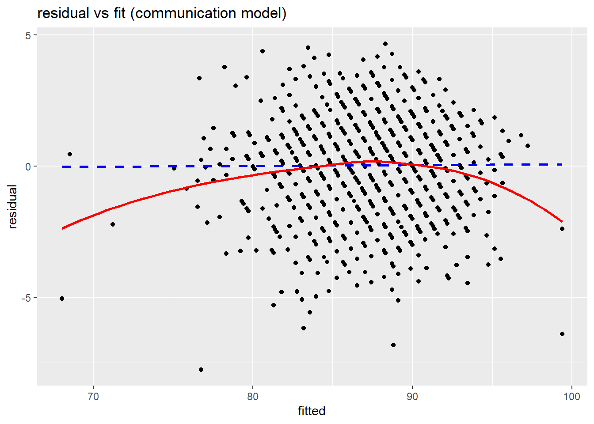
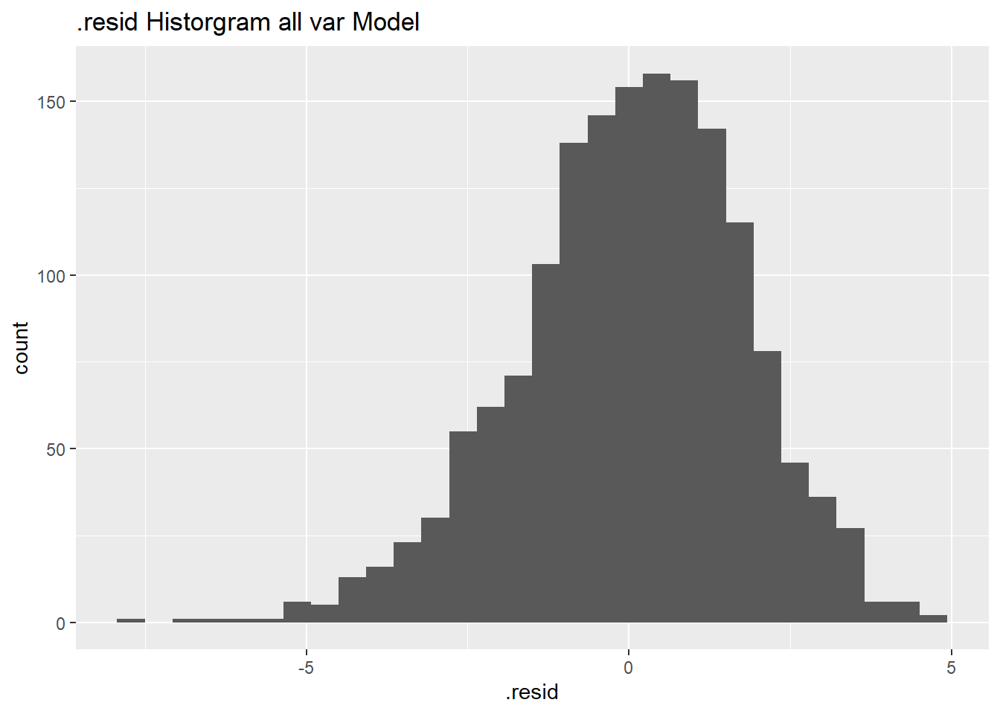

| Packages Used | |
| Package | Use |
|---|---|
| readr | Load files |
| tidyverse | Massage data |
| dplyr | Massage data |
| gt | Create tables |
| patchwork | Combine plots |
| rsample | Split data sets |
| broom | Make predictions on models |
Hospital Project
Context and Question
The data I looked into in this project is from the Centers for Medicare and Medicaid Website. The data set is a listing of various questions and ways of rating hospitals. This includes star ratings, answers percentages, and mean score which contribute to how well patients rate a hospital. Initially what I wanted to explore with this hospital data set was seeing which parts of a hospital contribute the most to patients rating it highly. Along with being on the lookout for any unexpected or shocking relationships between the rating categories.
Here are the Packages I used for my analysis.
Data Wrangling
The data set starting off was very messy and hard to work with. To start off looking into this Hospital data set, I made all NA’s the same, took out the unnecessary data for what I was looking into. I used the select function for this, taking out columns in my data set such as State, Address and completion Dates that were unneeded for what I wanted to look into. I then separated out the ways of rating the hospitals into their 3 categories/data sets. With the 3 data sets being linear mean scores out of 100 for specific attributes of the hospital, star ratings out of 5 which are rates similarly to linear mean score and answer percent which tracks what percentages of responses tracked to which specific answers.
Show code
hosp <- read_csv("HCAHPS-Hospital.csv", na = c("Not Available", "Not Applicable"))
hosp2 <- hosp |>
select(!c("State", "Telephone Number", "Address", "County/Parish",
"Number of Completed Surveys", "Number of Completed Surveys Footnote",
"Survey Response Rate Percent", "Start Date", "End Date"))Show code
hstar <- hosp2 |>
select(!c("HCAHPS Answer Percent", "HCAHPS Linear Mean Value")) |>
filter(!is.na(`Patient Survey Star Rating`))Show code
hpercent <- hosp2 |>
select(!c("Patient Survey Star Rating", "HCAHPS Linear Mean Value")) |>
filter(!is.na(`HCAHPS Answer Percent`))Show code
hmean <- hosp2 |>
select(!c("HCAHPS Answer Percent", "Patient Survey Star Rating")) |>
filter(!is.na(`HCAHPS Linear Mean Value`))Data Wrangling (Continued)
Separating the rating types wasn’t the end of my data wrangling though. My data was still unworkable in its current state. With each thing being rated, such as doctor communication or staff responsiveness having its own row. I used the pivot wider function, to widen my data set and give each thing being rated its own column. I then had to use the as.numeric function to change the data in my linear mean score data set from characters to numbers. Finally I shortened the names in my linear mean value data set, and deleted the old names to make it easier to code and do my eda/model selection.
Show code
hstar <- hstar |>
pivot_wider(
id_cols = `Facility ID`,
names_from = `HCAHPS Answer Description`,
values_from = `Patient Survey Star Rating`
)Show code
hpercent <- hpercent |>
pivot_wider(
id_cols = `Facility ID`,
names_from = `HCAHPS Answer Description`,
values_from = `HCAHPS Answer Percent`
)Show code
hmean <- hmean |>
pivot_wider(
id_cols = `Facility ID`,
names_from = `HCAHPS Answer Description`,
values_from = `HCAHPS Linear Mean Value`
)Show code
# Convert to numeric safely
hmean$`Overall hospital rating - linear mean score` <- as.numeric(
as.character(hmean$`Overall hospital rating - linear mean score`)
)
# Shorten the column names (rename keeps every other column as it is)
hmeanc <- hmean |>
rename(
Nurse_comm = `Nurse communication - linear mean score`,
Doctor_comm = `Doctor communication - linear mean score`,
Staff_resp = `Staff responsiveness - linear mean score`,
Med_comm = `Communication about medicines - linear mean score`,
disc_info = `Discharge information - linear mean score`,
care_trans = `Care transition - linear mean score`,
cleanliness = `Cleanliness - linear mean score`,
quietness = `Quietness - linear mean score`,
overall_rating = `Overall hospital rating - linear mean score`,
rec_rating = `Recommend hospital - linear mean score`
)Exploratory Data Analysis
Now that I had my data in the form that I wanted it, I could start on Exploratory data analysis to see what is going on. After trying some different type of tables and graphs I settled on making scatter plots. I made a scatter plot for each of the 8 variables in my data that contribute to a hospital’s overall linear mean score and mapped them against the overall linear mean score. Each of the graphs showed a positive linear relationship between the variables and the overall linear mean score. This is unsurprising considering the context of the data. If a hospital is good at one area of rating it could be expected that it would be well rated in other areas. Even on a one to one scale it isn’t very shocking. The higher a score a hospital gets in one area, the higher overall score it would get.
Show code
plot1 <- ggplot(data = hmeanc,
mapping = aes(
x = Staff_resp,
y = overall_rating
)) +
geom_point() +
geom_smooth(method = "lm", color = "darkblue",
linetype = "dashed", se = FALSE) +
geom_smooth(method = "loess", color = "darkred", se = FALSE) +
labs(
title = "Staff Responsiveness vs Overall rating",
x = "Staff Responsiveness",
y = "Overall Rating"
) +
theme(plot.title = element_text(size = 7),
axis.title.x = element_text(size = 7),
axis.title.y = element_text(size = 7))This is the code for my first plot. I repeated the same steps for plots 2-8 only changing my x variable and graph name.
Show code
(plot1 + plot2 + plot3 + plot4 + plot5 + plot6 + plot7 + plot8)
Model Selection
For my model selection I decided to make some linear models, since the variables track fairly linearly to the overall score. Starting off I did a training and testing split which is standard for making models. I made 3 models. I made a communication model using Doctor and Nurse communication scores. I made another model using all of the variables in the data set (Nurse communication, doctor communication,staff responsiveness, communication about medicine, discharge information, care transition,cleanliness and quietness) and I made a third model which is just my null model.
Show code
set.seed(17)
hmeanc_split <- hmeanc |>
initial_split(prop = 0.50)
hmeanc_training <- training(hmeanc_split)
hmeanc_test <- testing(hmeanc_split)Show code
lmcomm <- glm(
overall_rating ~ Nurse_comm + Doctor_comm,
data = hmeanc_training
)
lmall <- glm(
overall_rating ~ Nurse_comm + Doctor_comm + Staff_resp + Med_comm +
disc_info + care_trans + cleanliness + quietness,
data = hmeanc_training
)
lmnull <- glm(
overall_rating ~ 1,
data = hmeanc_training
)Looking at the intercept and slope of my models gives interesting results. The slopes of the Nurse_comm and Doctor_comm variables are positive which is expected as when either score increases the overall rating increases, but the intercept doesn’t make much sense in the context of our hospital scores. Rounding our intercept it is around -29.144 and the lowest score a hospital can get is zero., so if a hospital had a zero on Doctor_comm and Nurse_comm it would be expected to have a negative score from our model, which isn’t possible. Our 2nd model with all similarly has a negative intercept which doesn’t fit our context, along with having a positive slope for most of the variables but our med_comm variable is a bit of an outline. It has a negative slope, meaning holding the other variables constant, in this model as our med_comm score increases the overall hospital rating is actually expected to decrease.
| term | estimate | std.error | statistic | p.value |
|---|---|---|---|---|
| (Intercept) | -29.1445850 | 1.50496565 | -19.36561 | 3.308471e-75 |
| Nurse_comm | 0.8912442 | 0.02789718 | 31.94747 | 1.540137e-173 |
| Doctor_comm | 0.3941571 | 0.02852940 | 13.81582 | 4.303723e-41 |
| term | estimate | std.error | statistic | p.value |
|---|---|---|---|---|
| (Intercept) | -16.86566301 | 1.786095877 | -9.442753 | 1.246151e-20 |
| Nurse_comm | 0.37649278 | 0.037266739 | 10.102649 | 2.671060e-23 |
| Doctor_comm | 0.13176060 | 0.026892001 | 4.899621 | 1.058183e-06 |
| Staff_resp | 0.02682459 | 0.016485741 | 1.627139 | 1.039059e-01 |
| Med_comm | -0.02876796 | 0.015872411 | -1.812451 | 7.010524e-02 |
| disc_info | 0.02604246 | 0.015792833 | 1.649005 | 9.934425e-02 |
| care_trans | 0.50680536 | 0.028399140 | 17.845800 | 4.544313e-65 |
| cleanliness | 0.10659103 | 0.010744762 | 9.920278 | 1.513074e-22 |
| quietness | 0.07273742 | 0.009595244 | 7.580570 | 5.815706e-14 |
| term | estimate | std.error | statistic | p.value |
|---|---|---|---|---|
| (Intercept) | 87.73529 | 0.09791913 | 895.9975 | 0 |
Continuing on my model selection, I used the argument function to produce some predictions based off of my testing set, which gave me my .fitted, variable which is my predictions. I then made the .resid variable by subtracting the actual overall score from the predicted overall score to find the difference.
Plotting the results of .resid against .fitted as both a scatter plot and .resid alone as histogram gives some good insight into how well our models predicted overall score.
Residual Scatter plots
I made a similar scatter plot for 2 of my models, only changing the data in my code.
Show code
resid_scatter <- function(d, ttl) {
ggplot(data = d, mapping = aes(x = .fitted, y = .resid)) +
geom_point() +
geom_smooth(method = "lm", color = "blue",
linetype = "dashed", se = FALSE) +
geom_smooth(method = "loess", color = "red", se = FALSE) +
labs(title = ttl, x = "fitted", y = "residual")
}Show code
resid_scatter(hmeanc_pred2, "residual vs fit (communication model)")
Show code
resid_scatter(hmeanc_pred1, "residual vs fit (all variable model)")
Comparing the residual scatter plots, the communication model’s residuals are closer together and close compared to the all variables model. The all variables model has more variability at most values in its over/under estimates. A scatter plot wouldn’t show us much for our null model as it would just be a straight line.
Residual Histograms
Show code
resid_hist <- function(d, ttl) {
ggplot(data = d, mapping = aes(x = .resid)) +
geom_histogram() +
labs(title = ttl)
}Show code
resid_hist(hmeanc_pred2, ".resid Histogram Comm Model")
Show code
resid_hist(hmeanc_pred1, ".resid Histogram all var Model")
Show code
resid_hist(hmeanc_pred3, ".resid Histogram null Model")
I also made 3 similar histograms of my models, only changing the data in my code for each.
We can look at the histograms and see similar information to the scatter plot. The communication model is more closely centered at zero than the other two models, but it also has the biggest outlier, with a residual under -10. Our all variable model is less centered at zero, and more spread out between -5 and 5. Our null model has around 300 residual values around -5. This is more than any value on the all variable and communication models.
Rmse
The last and arguably most important step of our model selection in this case is checking our Rmse values. The lower Rmse value a model has the closer its predictions are to the actual value the model is trying to predict.
Show code
rmse <- function(d) sqrt(mean(d$.resid^2))
rmse_vals <- c(
Lmcomm = rmse(hmeanc_pred2),
Lmall = rmse(hmeanc_pred1),
Lmnull = rmse(hmeanc_pred3)
)Here I computed the values of my rmse by taking each of the residual values for the three models by, squaring the residuals,taking the mean value and then square rooting.
Show code
rmse_tbl <- data.frame(
`Model Type` = names(rmse_vals),
`RMSE Score` = unname(rmse_vals),
check.names = FALSE
)
gt(rmse_tbl) |>
fmt_number(columns = `RMSE Score`, decimals = 4) |>
tab_header(
title = "RMSE Scores",
subtitle = "Comparison of different models"
)| RMSE Scores | |
| Comparison of different models | |
| Model Type | RMSE Score |
|---|---|
| Lmcomm | 1.7514 |
| Lmall | 1.4441 |
| Lmnull | 3.8477 |
Show code
ggplot(rmse_tbl, aes(x = reorder(`Model Type`, `RMSE Score`), y = `RMSE Score`)) +
geom_col(fill = "#0F6B63", width = 0.6) +
geom_text(aes(label = round(`RMSE Score`, 3)), vjust = -0.4) +
labs(x = "Model", y = "RMSE (lower is better)") +
theme_minimal()
I made a table of the resulting Rmse’s based on each model. Since the smaller the Rmse the closer the model is to what it’s trying to predict the “best” model is the communication model, followed by the all variables model, then the null model. It makes sense our null model predicts the worst as any values under its predicted score of 87 result in a positive residual and the score is out of 100, so 87 shouldn’t always be expected.
Insights
Thinking back to our Rmse scores and variables we used in our models gives us a good picture into what is important to people when rating hospitals. Better communication from doctors and nurse tracks more closely with what the final rating of a hospital will be. than other variables do This make sense, as the doctors and nurses are the people who deal with patients and how they feel about a hospital compared to other factors. If doctors and nurse make the patient feel safe and understood but the hospital is very noise they will like the hospital more than if say the hospital is very quiet but the doctors and nurse don’t communicate with them very well.
Project Limitations & Constraints
Upon inspection this data set is ethical compared to others. It doesn’t have any personal information linked to patients while, providing a rating for hospitals so people can choose the best, for their health and wellness. For this project, some limitations I faced that could be expanded on by someone doing future work are scope creep, and time. Much more advanced questions could definitely be asked about this model if a person had more time or resources to tackle it. Working with models and data such as this can be considered important for hospitals. If a hospital needs to improve their overall rating to avoid things such as loss of funding and closure knowing what most positively influences patient experiences can be key factor. Since hospitals don’t have infinite time or money, knowing how to improve their facilities effectively, by ranking factors of importance along with other factors is something hospital staff could viably do. The models I made aren’t well fitted enough to tackle a problem such as how to improve a hospital, but they do give some insight into what factors of rating predict a hospital’s overall rating best. An incorrect prediction, like an overprediction from a model like mine could cause a hospital to expect higher ratings than it actually receives causing it to have less patients because it is lower rated.